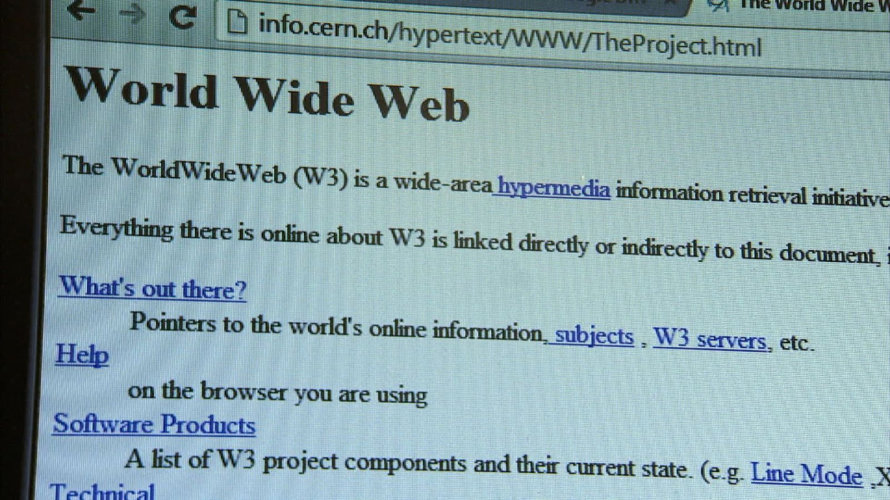

Story of the First Website
Today, billions of people use websites every day to search for information, watch videos, communicate, learn, shop, and share ideas. The web has become such a normal part of modern life that it is difficult to imagine a world without it.
Yet every website on the internet can trace its origins back to a single page created in 1991. Unlike modern websites filled with images, videos, animations, and interactive features, the first website was incredibly simple. It existed for one purpose: helping scientists share information more easily.
The first website was created by Tim Berners-Lee while working at CERN in Switzerland. What started as a practical solution to an information-sharing problem would eventually become one of the most important inventions in human history.
The Problem Before the World Wide Web
During the 1980s, researchers around the world were producing enormous amounts of information. Scientific papers, reports, technical documents, and experiment data were stored on different computers using different systems.
Finding information was often frustrating. Researchers needed to know exactly where a document was stored and how to access the specific system that contained it.
At CERN, where thousands of scientists collaborated on international projects, managing information became increasingly difficult as research grew more complex.
Valuable knowledge existed, but it was scattered across disconnected systems.
The Breakthrough Idea
Tim Berners-Lee believed there should be a simpler way to organize and access digital documents. His solution was based on hypertext, a concept that allowed one document to link directly to another.
Instead of searching through isolated files, users could move between related documents simply by following links.
To make this possible, Berners-Lee developed three technologies that remain essential to the web today: HTML for creating pages, HTTP for transferring information, and URLs for locating resources.
Together, these technologies formed the foundation of the World Wide Web.
The First Website Ever Created
In 1991, Berners-Lee launched the world's first website on a NeXT computer at CERN.
The website was simple, text-based, and focused entirely on explaining what the World Wide Web was and how people could use it.
There were no images, videos, advertisements, or animations. It functioned more like a technical guide than the websites we know today.
Despite its simplicity, it demonstrated a revolutionary idea: information connected through links that anyone could navigate.

How the Web Expanded
After the first website went online, researchers and universities quickly recognized its potential. More web servers appeared, more websites were created, and early web browsers made navigation easier.
What started as a specialized research tool soon began spreading beyond the scientific community.
As adoption increased, the web transformed into a global network of connected information.
The Rise of Web Browsers
One of the biggest reasons for the web's growth was the development of user-friendly browsers. These programs allowed people to move between pages by clicking links instead of using complex commands.
Browsers made the web accessible to ordinary users, not just scientists and programmers.
As browser technology improved, more individuals and organizations began creating websites.
Why It Changed Everything
The World Wide Web fundamentally changed how humans interact with information.
Instead of isolated files stored on separate systems, knowledge became part of a connected network that anyone could access.
This innovation paved the way for search engines, online education, digital communication, e-commerce, streaming services, social media, and countless other technologies.
Much of modern life now depends on ideas first demonstrated by that original website.
A Legacy That Changed the World
Few inventions have transformed society as profoundly as the World Wide Web.
What began as a solution for researchers at CERN became a platform that reshaped communication, education, business, entertainment, and culture.
More than three decades later, the web continues to evolve, but its core principle remains unchanged: connecting information through links so people can share knowledge more easily.
Every webpage, search result, online store, and social platform exists because of the foundations established by that very first website.